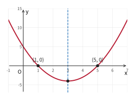
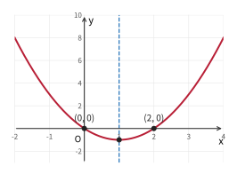
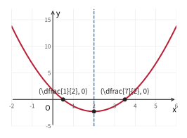

別冊練習問題 7 の解答 x軸から切り取る線分の長さ
(1) 放物線 \(y=x^2-6x+c\) が \(x\) 軸から切り取る線分の長さが \(4\) になるように、定数 \(c\) の値を定めよ。
平方完成
\(y=x^2-6x+c=(x-3)^2-3^2+c\)。軸は \(x=3\)。

交点の位置
軸について対称なので、2交点は \(x=3\pm\dfrac{4}{2}\)。
\(c\) を決める
\(x=3+\dfrac{4}{2}=5\) で \(y=0\)。
\[\left(\dfrac{4}{2}\right)^2-3^2+c=0\ \Rightarrow\ c=5\]【答案】
\[c=5\]答
(2) 放物線 \(y=x^2-2x+c\) が \(x\) 軸から切り取る線分の長さが \(2\) になるように、定数 \(c\) の値を定めよ。
平方完成
\(y=x^2-2x+c=(x-1)^2-1^2+c\)。軸は \(x=1\)。

交点の位置
軸について対称なので、2交点は \(x=1\pm\dfrac{2}{2}\)。
\(c\) を決める
\(x=1+\dfrac{2}{2}=2\) で \(y=0\)。
\[\left(\dfrac{2}{2}\right)^2-1^2+c=0\ \Rightarrow\ c=0\]【答案】
\[c=0\]答
(3) 放物線 \(y=x^2-4x+c\) が \(x\) 軸から切り取る線分の長さが \(3\) になるように、定数 \(c\) の値を定めよ。
平方完成
\(y=x^2-4x+c=(x-2)^2-2^2+c\)。軸は \(x=2\)。

交点の位置
軸について対称なので、2交点は \(x=2\pm\dfrac{3}{2}\)。
\(c\) を決める
\(x=2+\dfrac{3}{2}=\dfrac{7}{2}\) で \(y=0\)。
\[\left(\dfrac{3}{2}\right)^2-2^2+c=0\ \Rightarrow\ c=\dfrac{7}{4}\]【答案】
\[c=\dfrac{7}{4}\]答